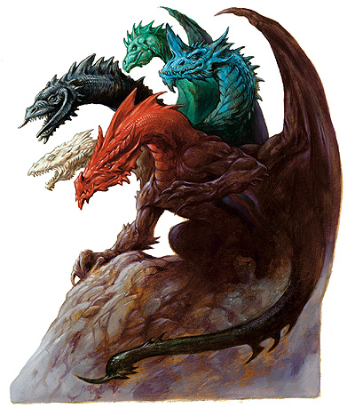
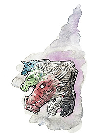

提亚玛特（Tiamat）

五色神龙，恶龙之女王
弱等神力
邪徽：五头龙

居住位面：Baator
阵营：守序邪恶
神职：邪恶龙，征服
信徒：邪恶龙，征服者
牧师阵营：中立邪恶，守序邪恶
领域：毁灭，邪恶，秩序，诡术
偏好武器：爪
提亚玛特，如同她的第一夙敌巴哈姆特一般，在很多地方被敬奉为神。所有的邪恶龙都对提亚玛特抱以敬意，而绿龙和蓝龙则更是能够欣然与乐意地承认她对他们的至高无上的君主地位。善良龙内心之中则也对她表示尊重，尽管表面上他们尽量避免提到，甚至是联想起这位女王陛下的名讳。
以她的自然形态出现时，提亚玛特乃是一只身体壮硕的，拥有五只龙头以及一条双足飞龙式的尾巴的巨龙。她的每只一头都拥有着不同的颜色，分别是白，黑，绿，蓝和红。她巨大的躯干上则是散布着由这些颜色组成的美丽条纹。
提亚玛特拥有很多的配偶，包括很多年纪已经上了太古的白龙，黑龙，绿龙，蓝龙和红龙。
教义
提亚玛特只关心如何传播她的邪恶主张，如何击败所谓的“善良人士”，以及如何扩大邪恶龙族的人口数目。她最喜欢的小娱乐就是把一个村庄，城市或者国家，甚至是世界上的一大块地区都彻底夷为平地。她是个阴影中的恶者，她的存在往往能够在精神层面被感知，但却没有人能在视觉层面发现她。
提亚玛特一直坚持着寻找能够扩大邪恶龙族在世上的力量与势力的方法，特别是当她和她的恶龙追随者们发现他们被卷入了与善良龙族的领土争夺时。提亚玛特也不倦地追求着从她的追随者那里来的更多的尊敬，崇拜与供奉。
神职人员与神殿
如同巴哈姆特一般，也是几乎没有什么牧师与神殿供奉提亚玛特。她只接受邪恶牧师。提亚玛特的牧师，如同提亚玛特自己，一直在找寻着一块只应属于邪恶龙族自己的“净土”。
尽管大多数的邪龙都崇拜提亚玛特，但是几乎没有什么龙在他们的自己的巢穴为提亚玛特献上一座小小的神龛或者祭坛，那是以为内他们不想让提亚玛特那贪婪的眼睛总是注视着他们巢穴中的宝藏。当然，他们以另外单独的巨大黑暗洞穴为神殿，并不时的奉上财宝和牺牲品为供品。
提亚玛特
超巨型龙
神格等级：10
生命骰：49d12+588（906hp）
先攻调整值：+4（精通先攻）
速度：40尺，飞行150尺，笨拙机动性，游泳40尺
防御等级：69（-8体型，+10神格等级，+48天生防御，+9偏斜）
攻击加值：5咬 +70近战，2翼 +65近战，尾部刺击 +65近战；或者法术 +70近战接触或 +51远程接触
伤害加值：咬 4d6+19/19-20，翼 2d8+9，尾部刺击 3d6+9加毒性伤害；或者以法术攻击
占据/威胁范围：40尺*80尺/15尺
特殊攻击：龙息，碾压，尾部掠击，变声，法术，类法术能力，领域神力，超凡神圣能力。
特性：神术免疫，火类法术免疫，伤害减免 45/+4，神术自发性施法，理解、交谈及阅读所有语言并直接于任何10里内的生命存在交谈，远程沟通，神祗国度，随意无误传送，随意位面旅行，目盲视觉 10里，嗅觉，黑暗视觉，SR42，神圣光环（1000尺，DC29）
豁免调整值：坚韧 +48，反射 +36，意志 +43
能力值：力量 49，敏捷 10，体质 35，智力 28，感知 25，魅力 29
技能：炼金术 +4，5唬骗 +71，专注 +73，交涉 +71，收集信息 +69，威吓 +71，知识（奥术） +41，知识（龙） +44，知识（历史） +41，知识（位面） +41，知识（宗教） +41，聆听 +71，探知 +71，搜索 +71，察言观色 +69，辩识法术 +71，侦察 +71，野外知识 +33
专长：警觉，盲斗，顺势劈，格斗施法，增强顺势斩，盘旋，精通重击（咬），精通先攻，专家，飞行攻击，猛力攻击，攫取，特技飞行
龙息（Su）：提亚玛特的每一个头都有不同龙息攻击方式。
白：向一个长为70尺的锥状空间内发射冷冻气息，在其中的生物将要承受12d6点冷冻伤害
黑：发射出一条5尺高，5尺宽，140尺长的酸射线，被射线命中的生物将受到24d6点酸伤害
绿：向一个长为70尺的锥状空间内发射腐蚀气息，在其中的生物将要承受24d6点酸伤害
蓝：发射出一条5尺高，5尺宽，140尺长的闪电射线，被射线命中的生物将受到24d8点电伤害
红：向一个长为70尺的锥状空间内发射火焰气息，在其中的生物将要承受24d10点火焰伤害
每种提亚玛特的龙息攻击都可以依靠通过DC56的反射检定来避免其中的一般伤害。
提亚玛特的每个头在使用了一了龙息后，需要等待1D4轮以使用第二次。
碾压（Ex）：提亚玛特可以以一个标准动作降落在敌人的身上，利用她的整个身体去碾压他们。碾压攻击仅对体形为大型或更小的对手有效。一次碾压攻击可以覆盖全部处于提亚玛特身体之下的敌人。在攻击区域内的敌人必须通过反射检定（DC56），否则将被自动压制，并将每轮受到4d8+28点伤害，直到提亚玛特自己离开。提亚玛特可以以一次普通擒抱攻击维持压制状态。
尾部扫击（Ex）：提亚玛特可以以一个标准动作用尾部掠过一个直径为40尺的半圆型范围。中体形或更小的生物在其中会受到2d8+28点伤害，并需要做一次反射检定（DC56）以决定是否会被击倒。
多头攻击：提亚玛特在每一轮中都可以用她的全部五只头来进行攻击，甚至是在移动或冲锋过程中也可以。她也可以使用龙息或类法术能力以代替咬来进行攻击。这可以视作她的每一个头在每回合都可以进行一个标准动作。
如果一件武器在一次攻击中对提亚玛特造成了至少185点伤害，那么提亚玛特的一只头将死去，此计算方法按类似许德拉等多头生物的相应数据处理。
变声：只要她愿意，提亚玛特可以在任何时候模拟湖任何她所听过的声音。听到她模拟出的声音的人如果通过了意志检定（DC43）的话，那么可以辨认出是提亚玛特的诡计。
毒性：提亚玛特的尾部刺中的生物若没有能够通过坚韧坚定（DC56）的话，要受到3d6的暂时体质伤害，1分钟后，生物需要再做一次坚韧检定（DC560）以决定是否再受到另外3D6的暂时体质伤害。
水中呼吸（Ex）：提亚玛特具有在水下呼吸的不确定的特异能力（尽管作为神，她并不真的需要呼吸）。她可以在水下自由地使用她的龙息武器，法术及其他能力。
神圣免疫：属性伤害，属性吸取，酸，寒冷，即死效果，疾病，瓦解，电，能量吸取，火，心智影响效果，麻痹，毒，睡眠，震慑，变形，监禁，放逐。
超凡神圣能力：改变形态，改变大小，改变现实，致死一击，区域神力护盾，操控生物（非善良龙，或任何魅力不高于12的龙），神力风暴，神力护盾，额外领域（秩序），额外感觉增强（盲视），变形，法术免疫+，带“+”为独特能力，下文将说明。
领域神力：施放邪恶类和秩序类法术时施法者等级加1；每日10次邪恶打击（在一件武器的一次攻击检定和伤害检定中获得+20）
类法术能力：提亚玛特可以相当于施法者等级为21使用邪恶类和秩序类法术能力，以相当于施法者等级为20使用其他类法术能力。类法术能力的基本豁免DC为30+法术等级。Calm emotions,change self,circle of doom,confusion,contagion,create undead,blasphemy,desecrate,dictum,disintegrate,dispel chaos,dispel good,earthquake,false vision,harm,hold monster,implosion,inflictcritical wounds,inflict light wounds,invisiblility,magic circle against chaos,magic circle against good,mislead,nondetection,order's wraht,polymorph any object,protection from chaos,protection from good,screen,shatter,shidld of law,summon monster IX（仅限以邪恶类法术施展）,time stop,unholy aura,unholy blight
提亚玛特具有每日一次污染水源的能力。此能力可使10立方英尺的净水变得丧失活性并污秽，并不再能够被任何动物饮用。此能力也可以污染魔法药水或其他包含水的液体，比如酒。持有这些物品的生物若通过意志检定（DC43）的话，可以避免物品被污染。
提亚玛特还具有每日三次魅惑爬虫类动物的能力。此中力量可以视同一次机体魅惑类法术（通过意志检定[DC27]则无效），但此能力仅仅对爬虫类的有效。在使用了动物交谈法术的情况下，提亚玛特可以和任意种类的已被她魅惑了的爬虫类动物沟通。
每日神术：6/8/8/8/7/7/6/6/5/5；基础DC=23+法术等级
术士可知奥术（6/9/8/8/8/8/7/7/7/3；基础DC=22+法术等级）；0-arcane mark,dancing lights,detect magic,detect poison,ghost sound,light,mage hand,open/close,prestidigitation;1st-alarm,grease,magic missile,true strike,ventnloquism;2nd-detect thoughts,fog cloud,knock,locate object,silent image;3rd-displacement,nondetection,haste,major image;4th-arcane eye,emotion,improved invisibility,shadow conjuration;5th-feeblemind,mind fog,mirage arcana,telekinesis;6th-analyze dweomer,chain lighting,project imae;7th-insanity,prismatic spray,reverse gravity;8th-power word blind,trap the soul,Otto's irresistible dance;9th-energy drain,soul bind,wail of the banshee.
法术免疫（独特超凡神圣能力）：提亚玛特对任何5级或5级以下的法术或类法术能力免疫。
财产：Amulet of the planes,bracers of armor +8,carpet of flying（6尺乘9尺）,cloak of dispalcement,crystal ball with detect thoughts,darkskull,iron bands of bilarro,iron flask（空）,rob of storms,portable hole,ring of resistance +5,rod of rulership,and rod of splendor.提亚玛特只在她变为人形时携带或穿着这些物品。物品的奖励加值也在此时才有效。
其他神圣能力
其他神圣能力：
作为一个弱等神力，提亚玛特在任何掷骰中（包括攻击骰，伤害骰，豁免）自动取10，提亚玛特在攻击检定和豁免检定掷骰自然值出1时，并不视作必然失败，而是视作普通失败。他是不朽的。
感知：提亚玛特可以看见（无论通常视觉或黑暗视觉），听见，触摸和嗅到10哩的距离。此外，她还拥有距离为10里盲视能力，并可看到1600尺内的隐形生物和由以太直接构成的生物（视为一个直接启动的侦察隐形法术）。作为一个标准动作，她能够感知到任何动物，她的信徒，圣迹，与她有关的物体和任何她的名字在一个小时内被说出的地点周围10哩内的一切。她能够立即将她的感知延伸到5个地方。她立即能够在2个地方阻止神格等级等于或者小于她的神的感知力量，时间最长可达10个小时。
神职感知：提亚玛特可以感觉到任何影响到邪恶龙的安全与幸福的事件，只要这事件被疑至少可以影响到500条龙。
自动动作：提亚玛特能够以一个自由动作使用任何它的知识系技能，只要该项任务的DC在20或者更低。她每轮能够完成5个类似的自由动作。
创造魔法物品：提亚玛特能够创造魔法武器和其他可以用了爱操控生物的魔法物品，比如hat of disguise,cloak of displacement,或者staff of charming，只要物品的交易价格不超过30000GP。
化身
提亚玛特在尘世间是非常活跃的。她经常易容成一位迷人的精灵或人类女性去旅行。一般有几只邪龙也会易容或者隐形起来跟随并保护她。
提亚玛特的化身：如同提亚玛特的本体，但以下除外：神格等级为5；防御等级59（接触16，措手不及59）；攻击加值：+65近战（4d6+19/19- 20,5咬），+60近战（2d8+9，2翼），+60（3d6+9加毒性，尾部刺击），或法术 +65近战接触或 +46远程接触；特性，伤害减免 40/+4，SR397，神圣光环（50尺，DC24），豁免调整值 坚韧 +43，反射+31，意志+38；所有技能调整值减5
龙息：如同提亚玛特本体，但豁免DC全部减5
超凡神圣能力：改变形态，改变大小，神力护盾，额外领域（秩序），法术免疫